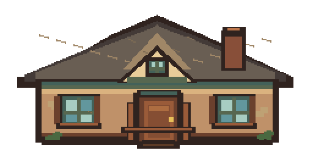
ENTRAR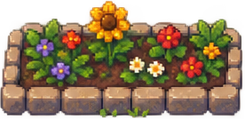
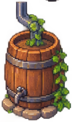
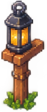
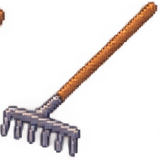
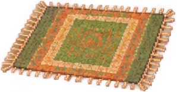
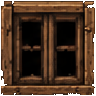
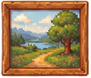
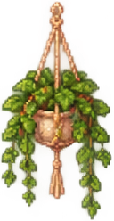
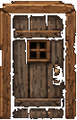
JARDIM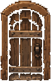
SÓTÃO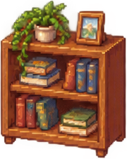
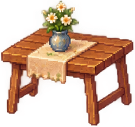
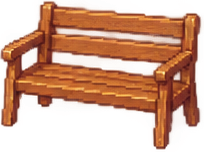
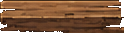
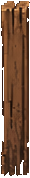
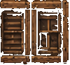
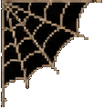
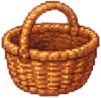
Você já fez a transformação principal. Quer encerrar esta visita com carinho?
Pode pular se preferir ficar no anonimato.
Alguém deixou esse cantinho no abandono. Quem vai cuidar dele?
W A S D ou setas para andar · espaço para limpar · no toque, use o direcional